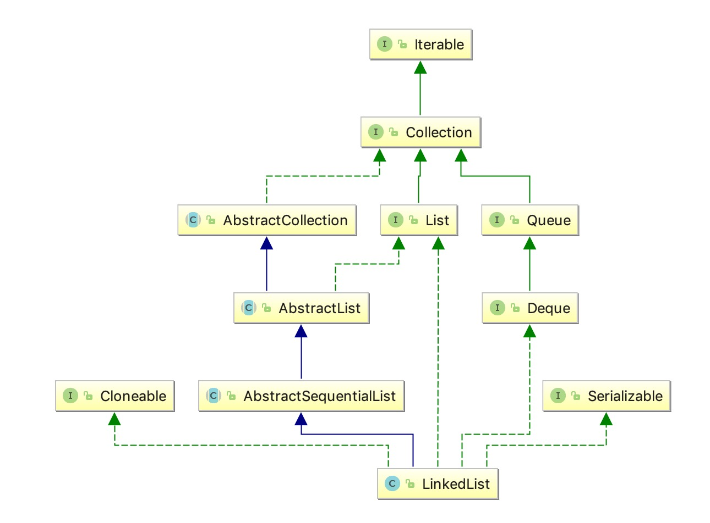
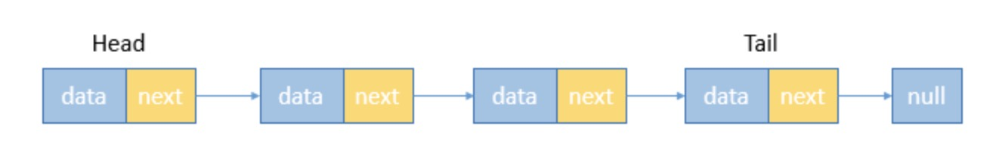
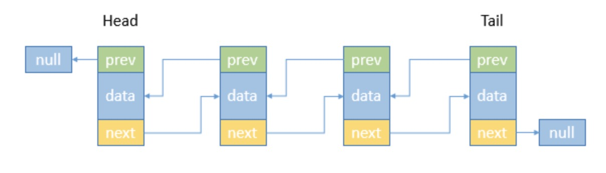
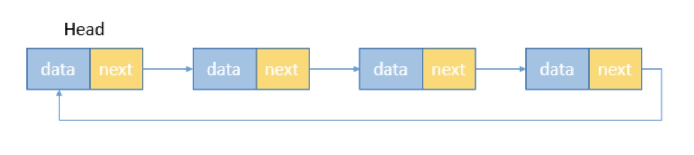
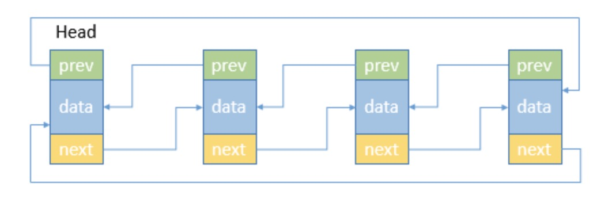

一、类关系图

LinkedList是基于双向链表实现的，下面简单回顾相应下数据结构基本概念。
什么是线性表？
线性表是具有相同特性的数据元素的一个有限序列
线性表分类
1.顺序存储，如数组
2.链式存储，如链表
什么是链表？
1.链表是一种物理存储结构上非连续、非顺序的存储结构，数据元素的逻辑顺序是通过链表中的指针链接次序实现的。
2.每个元素以结点的形式存储，而每个结点都由数据域和指针域构成
链表类别
1.单向链表：一个节点指向下一个节点

2.双向链表：一个节点有两个指针域，分别指向前一个节点和后一个节点

3.环形链表：能通过任何一个节点找到其他所有的节点，将两种(双向/单向)链表的最后一个结点指向第一个结点从而实现循环


二、源码分析
结构定义
|
|
1.first和last分别是头节点和尾节点
2.Node由数据item、上个节点prev和下个节点next组成
链表操作
初始化
|
|
添加
尾部添加节点
|
|
头部添加节点
|
|
指定位置添加节点
|
|
删除
删除头部
|
|
删除尾部
|
|
删除指定位置
|
|
1.比如原先有1、2、3三个节点，删除2这个节点，原先1的下一个节点指向3，原先3的上一个节点指向1，2这个节点清空
查找
查找头节点或尾节点
|
|
查找指定位置节点
|
|
更新节点
|
|
清空链表
|
|
fail-fast机制
1.详见ArrayList源码分析fail-fast部分
遍历
1.详见Java集合框架-迭代器